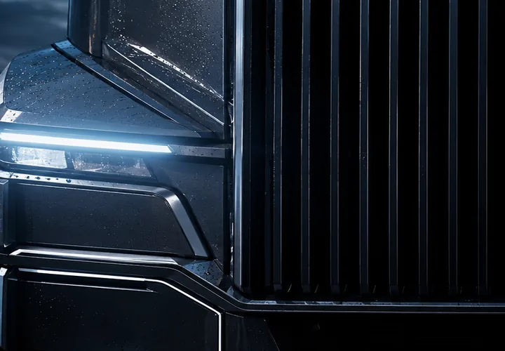
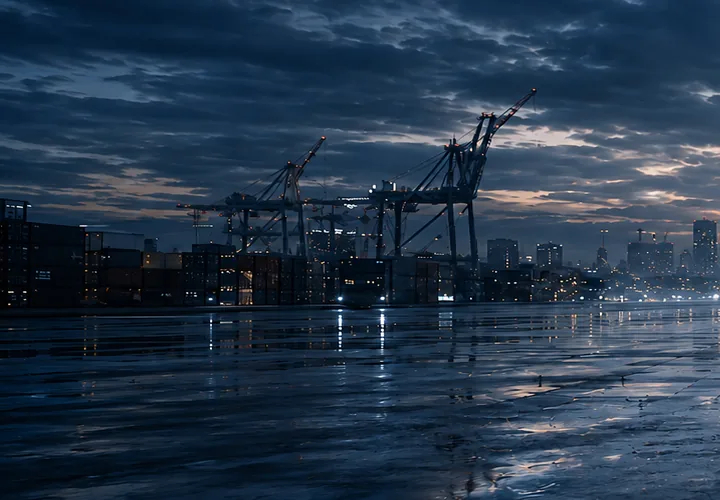

NORTH SEA GATEWAY
ROTTERDAM
The load enters the continental linehaul network.
- HUB
- EU-004
- GATE OUT
- 02:18 CET
- LOAD
- SEALED

Real-time telemetry and predictive maintenance.
Connected routes across the continent.

Efficiency engineered for long-distance transport.

Precision from warehouse to destination.
THE NETWORK
One connected logistics infrastructure moving freight across borders, cities and industries — every hour of every day.
LIVE LINEHAUL NL / DE / AT / HU
NORTH SEA GATEWAY
The load enters the continental linehaul network.
CENTRAL TRANSFER
Freight is synchronized across the central European trunk.
ALPINE JUNCTION
The eastbound corridor resolves into its final regional leg.
DANUBE DISTRIBUTION HUB
One movement completes. The wider network never stops.
From regional collection to international linehaul, every movement exists inside one connected system.
THE MACHINE
Every kilometre generates data. Every system communicates. Every vehicle becomes part of one continuously connected logistics infrastructure.
01 / PERCEPTION
Integrated radar, optical sensing and environmental monitoring continuously map the road ahead.
02 / INTELLIGENCE
Vehicle, route and cargo data are processed continuously — turning every truck into a live operational node.
03 / PROPULSION
High-efficiency propulsion and predictive energy management engineered for relentless long-distance operation.
04 / CHASSIS
Adaptive vehicle systems continuously balance stability, efficiency and load behaviour across changing road conditions.
ONE CONNECTED SYSTEM
Every vehicle continuously contributes to the same operational picture.
THE OPERATION
From the moment cargo enters the network to the second it leaves the loading bay, every movement is measured, verified and synchronized.
03 / ROUTE ASSIGNMENT
04 / AUTOMATED HANDLING
The active cargo path resolves continuously as each movement passes through the facility.
05 / MACHINE VISION
PRECISION AT INDUSTRIAL SCALE
Every vehicle, dock, shipment and route exists inside the same operational picture.
THE JOURNEY
One shipment. One controlled corridor. Every kilometre continuously connected to the network behind it.
02 / CHANGING CONDITIONS
Road, weather and vehicle data remain synchronized as conditions change around the load.
03 / ALPINE CORRIDOR
International freight moves through engineered infrastructure without losing operational visibility.
04 / FIRST LIGHT
From terminal departure to the next regional hub, the shipment never leaves the same connected operational picture.
THE ENERGY SYSTEM
Efficiency is engineered across every layer — from vehicle recovery and energy management to high-capacity charging and fleet infrastructure.
01 / RECAPTURE
Vehicle systems recover otherwise lost energy during deceleration and descending operation, feeding it back into the energy architecture.
02 / OPTIMISATION
Route, terrain, vehicle state and operational demand are continuously balanced to reduce unnecessary energy use across the journey.
03 / FREIGHT CHARGING
Charging infrastructure designed around the operational rhythm of heavy transport.
04 / INFRASTRUCTURE SCALE
Not an accessory to the fleet — part of the network itself.
ONE SYSTEM. EVERY KILOMETRE.
IT BEGINS WITH THE SYSTEM.
LIVE OPERATIONS
Every vehicle, shipment and operational decision remains connected to the same real-time network — twenty-four hours a day.
THE CONTROL LAYER
Every vehicle. Every shipment. Every route. One continuously connected operational system.
LIVE CORRIDOR / EU-C17
CONTINUOUS ADAPTATION
Live operational intelligence continuously adapts routes, capacity and timing as the network moves.
CONTINUOUS OPERATIONS
The infrastructure never sleeps because freight never stops moving.
NETWORK STATUSNOMINAL
THE NEXT MOVEMENT
Every system converges on the road ahead.